.png)
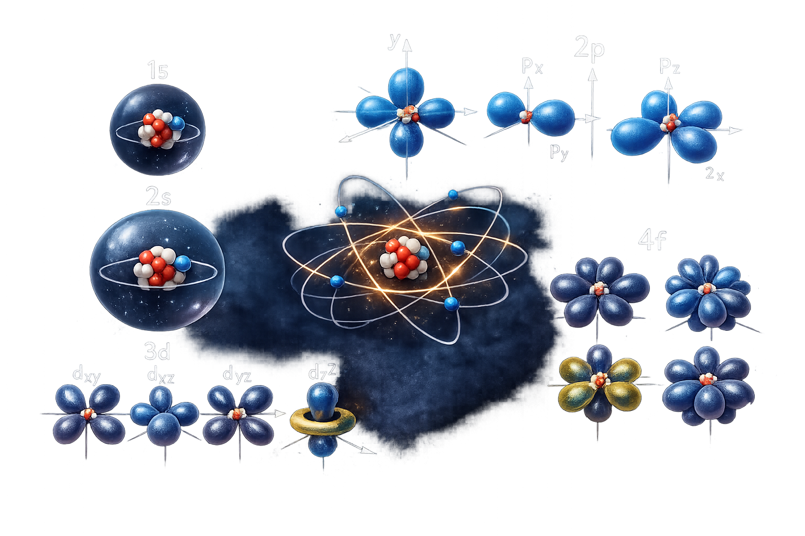
When we first learned about atomic structure we visualise it as electron orbiting the
nucleus like the planet going around the sun which is quite a simple way to visualise it, but now we came this far
learning many lessons of quantum mechanics, apparently we know that this is a terrible way to visualise a quantum
system. Quantum Numbers--
A better way to think about it is in terms of quantum numbers. there are few quantum numbers and they have their
own rules and that let electrons doing oribitals which is a 3D structure
We need a wave that is confined in a 3D space. For that there is an analogy where we have a wave that is confined on a streched string
Waves on a streched string
A string is connected at the end and when we pluck it it will produce standing waves. The fundamental frequency is
where half a wave fits the string and the next possible standing waves increments by adding exactly half a
wavelength. So, when we confine the wave discrete frequencies are allowed no frequency in between are allowed.
--------ENERGY--------
for physical wave we can esstimate the energy by looking the wave's frequency, for the fundamental wave it is
vibrating with the lowest frequency so it is vibrating very slowly so it has the lowest energy and for the next
harmonics energy increases as the frequency gets higher. That's okay with physical waves but for
quantum mechanics there is only mathematical wave which means nothing actually oscilating up and down it is
probability
wave the fundemantal wave has a probability of finding an electron around these region (yellow
region)
.png)
From the streched string how can we draw a 2D visualisation of electrons around the proton(hygrogen's ground state)
--------Ground State--------
In the ground state the probability starts
from zero and reaches a maximum and then goes back to zero. That's what
it looks like if it is a confined wave. When we picturise, one end could be nucleus and the ohter end will be
infinity(all of space). As we radially go outward from the proton to space the probability starts from zero
increases and reaches a maximum and then decreases and tends to zero as approaching to infinity.
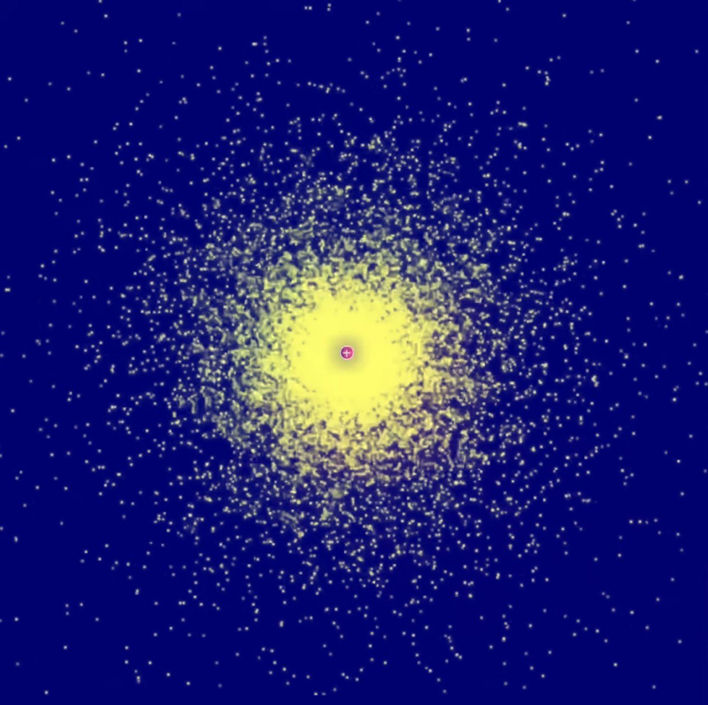
From the above image you may run in to a common misunderstanding, when you look carefully in the center it is brighter than the other parts even though the probability is less there near the proton. But it is just a problem of visualisation -- because of the density, The dots are confined in a small space so it looks very bright, what matters is not the density(not how crowded the dots are) what matters is that in a given radius how many total dots are there, that represents the probability.
--------Orbitals--------
This is a probability map-- You can predict
where it is most
likely to find the electron.
The dots represent
the
probability of finding an electron at that specific location. These diagrams are also called Electron Density
Maps or Dot-Density Diagrams.
--------First Excited State--------
When we go to the first excited state which is 2nd Harmonic (n = 2) there is a node in between. So when we consider
the probability, the probability starts with zero then increases and reaches a maximum, decreases and goes to zero
again(first node), increases and goes
to a maximum again (negative amplitude does not
matter because probability is amplitude squared) and decrease to zero. We can confine this between the nucleus and
radially going outwards to infinity
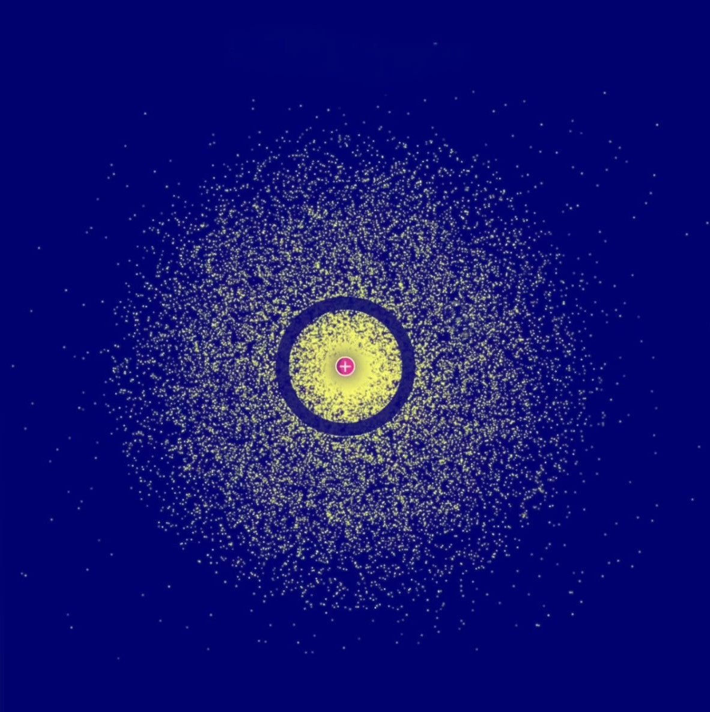
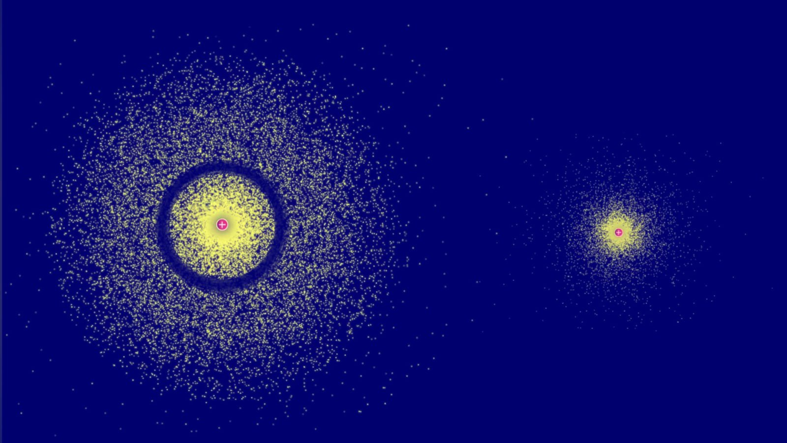
As compared to the ground state first excited state-- electron has more energy than in the ground state, you can
see
that by just looking both diagrams-- the first excited state is more spread out than the ground state, as the waves
are more confined thus more energy (uncertainty principle).
Energy Map
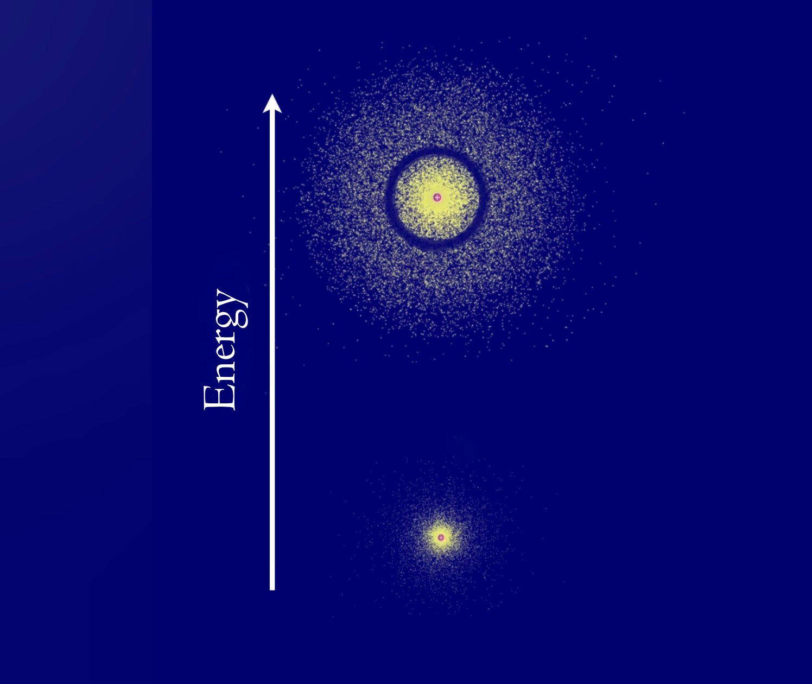
S Orbitals
In one dimension a nod is just a point
in 2 dimensional node becomes a straight line
In 3 dimension node
becomes a plane.
Slice a plane through the center because we should respect the symmetry like cutting a cake in equal halfs, The
coloumbs potential over here is symetric.
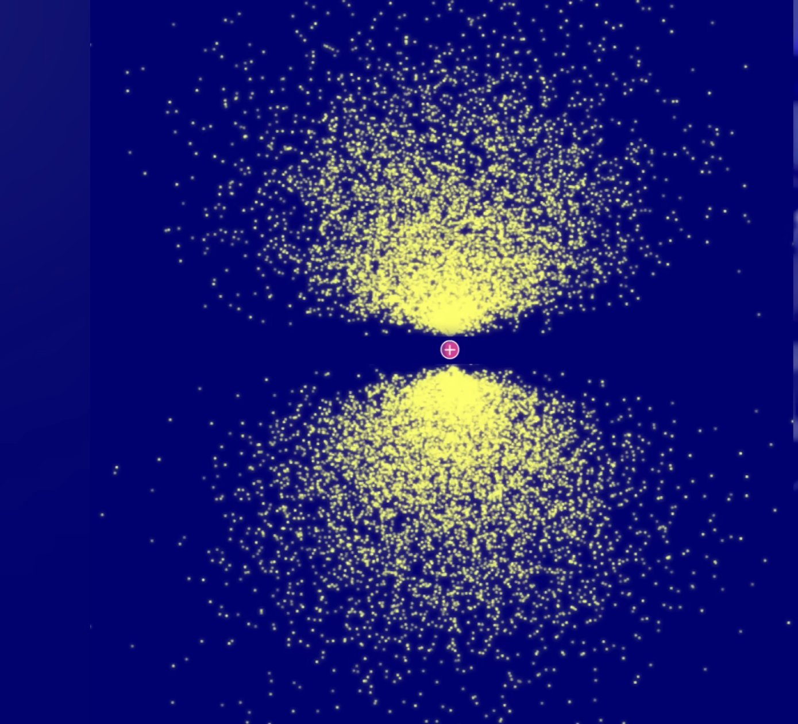
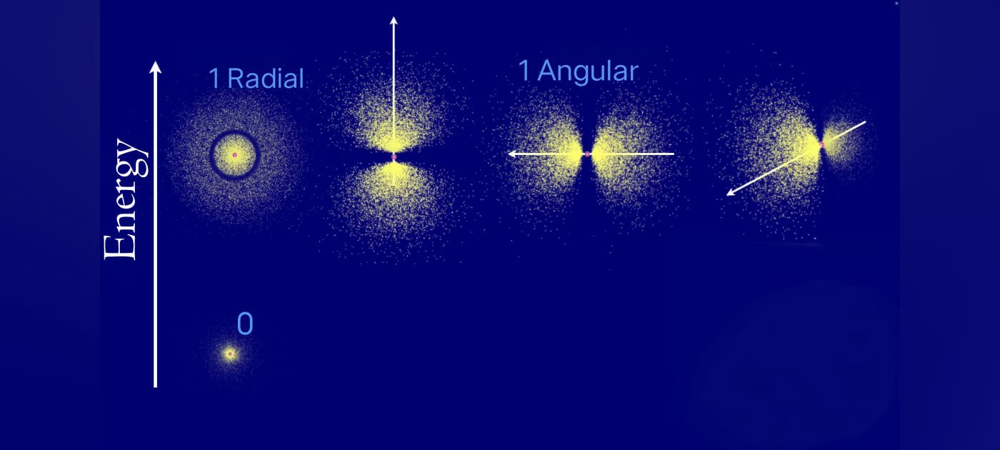
But we can't slice it diagonally because diagonals can give you a linear combination of these three. Eg: If you have three basis vector then any other vectors of different directions can be written as linear combination of these basis vectors. The spherical node does not give any directional property we call it as radial node (the node has the same distance from the center anywhere you go). The next three nodes gives directional property they are called angular node (plane slicing giving three P orbitals). The ground state has zero nodes. These are the 3 basis Orbitals (P orbitals).
-------- Second excited state--------
The second excited state is the 3rd harmonic which has 2 radial nodes.
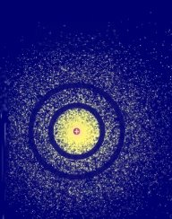
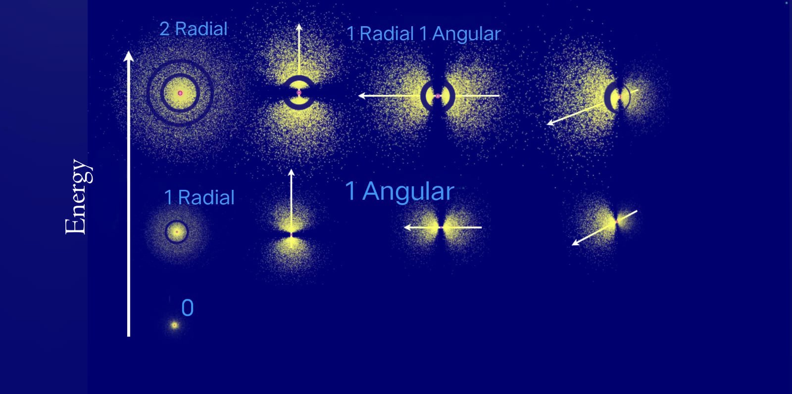
If both nodes are angular nodes.There are 5 ways to set up these nodes.
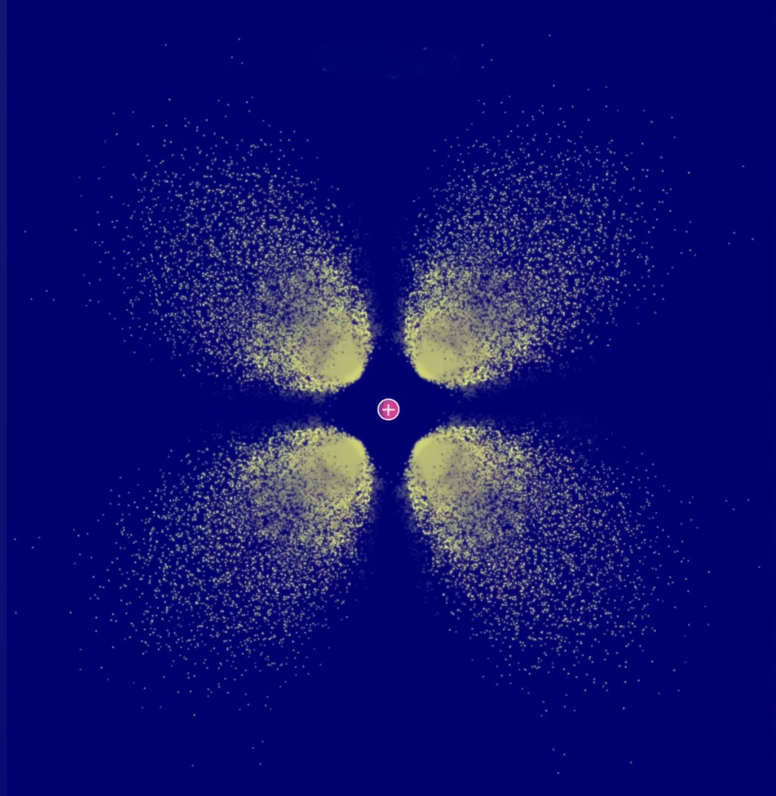
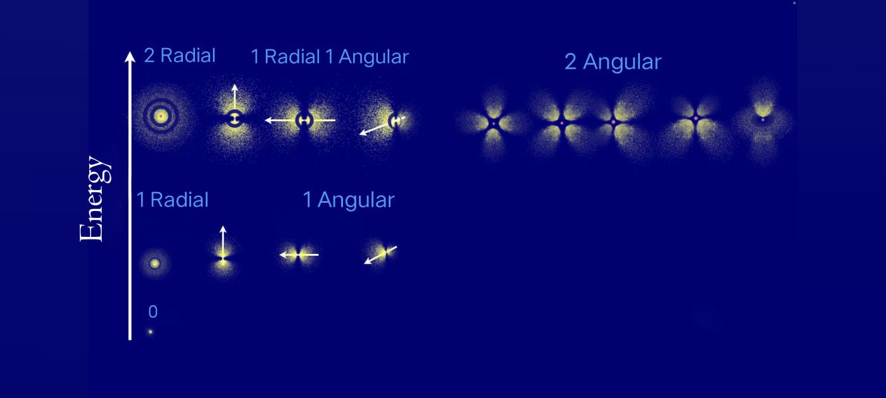
--------Principle Quantum Number--------
We need numbers to identify where the electron is in the atom. The first number identifies by the energy level -
n=1,n=2,n=3... which is called the principle quantum number.
--------Azimuthal quantum number--------
The second number is the azimuthal quantum number symbol(l) which is l=0,1,2,3...n-1 It runs from 0 to n-1 because
n=1 is the ground state and ground state has zero node that's why maximum has n-1 nodes. It shows how many angular
nodes are there. This is to identify the geometrical shape of the orbital.
--------Magnetic Quantum Number--------
The third number is the magnetic quantum number which shows the spatial 3d orientation of a orbital, The symbol is
mₗ. The values depends on the azimuthal quantum numbers (l) ranging from -l to +l (including zero). mₗ =
-l...0...+l. this tells you exactly how many different orientations that specific type of orbital can have. mₗ
cannot exist without l (l - how many angular nodes do that orbital have) We can find the orientations by knowing how
many angular nodes are there in the orbital, It directly limits it's possible orientation, that's the relationship
between azimuthal and magnetic quantum numbers. For example, if l=0 (s orbital) then mₗ=0 (only one spherical
orientation). If l=1 (p orbital) then mₗ=-1,0,+1 (three orientations). If l=2 (d orbital) then mₗ=-2,-1,0,+1,+2
(five orientations). If l=3 (f orbital) then mₗ=-3,-2,-1,0,+1,+2,+3 (seven orientations).
--------Electron Spin--------
The fourth number arises from the pauli exclusion principle which states that two electrons cannot have the same
quantum numbers. Each electron has a property called spin which can be either up or down. The electron spin (symbol
- ms) ---- If it's going up the spin is +1/2 and if it is going down it is -1/2. ms will only
be either +1/2 or -1/2 and this gives us the last quantum number.
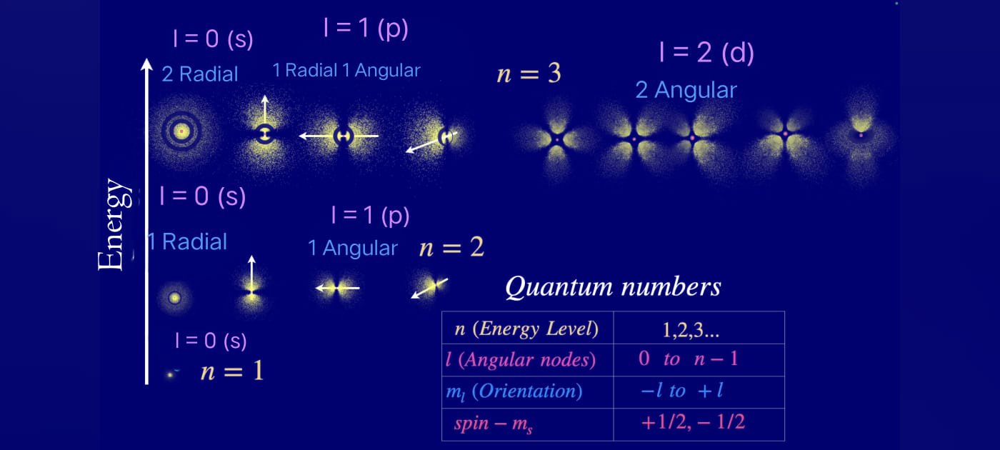